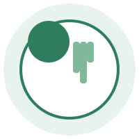

Evaluación completa
Antropometría y análisis de hábitos para conocer tu punto de partida real.
Somos una clínica nutricional en Temuco. Nuestro equipo de nutricionistas te acompaña en pérdida de peso, nutrición deportiva, control de enfermedades metabólicas y alimentación vegetariana o vegana.

Antropometría y análisis de hábitos para conocer tu punto de partida real.
Diseñamos tu plan según tus objetivos, gustos y condición de salud.

4 nutricionistas con distintas especialidades de atención.